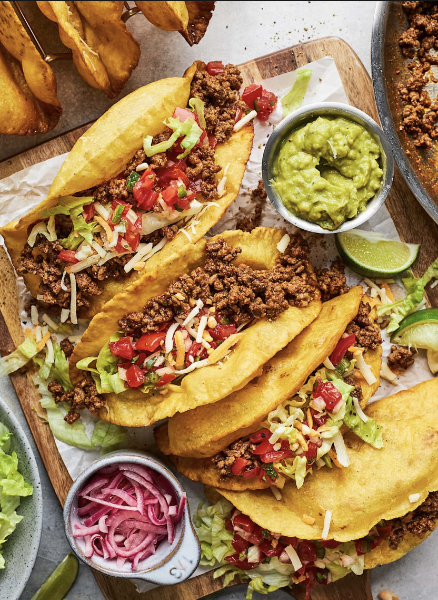

Authentic Taco recipe

Description
The best ground beef taco recipe made with homemade taco seasoning. The taco meat is jucy full of flavor and served with crispy taco shells.
INGRIEDIENTS
- Ground beef
- Spices- chilli powder, cumin, smoked paprika, garlic powder, onion powder and dried oregano
- Water add a little water to the meat and spices to help it create the sauce the will keep the taco meat juicy
INSTRUCTIONS
- Heat a large skillet over medium heat
- Brown the ground beef for about 5 minutes, breaking up the meat into small pieces using a wooden spoon. Cook until the meat is no longer pink
- Season with chilli powder, cumin, salt, paprika, garlic powder onion powder and oregano
- Pour in the water and let it simmer for 5 minutes or until thickened.
- To make the crispy tortillas: Add avocado oil or vegetable oil to a small skillet until its 1/2 inch up on each side.
- Theres plenty of steps left over but i cant be bothered to type them out so just the link HERE